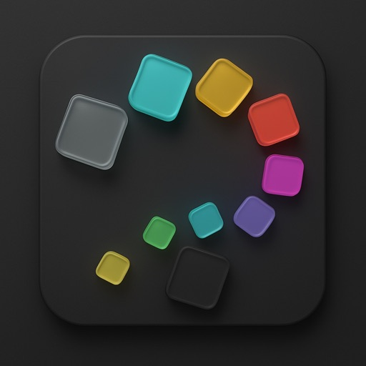
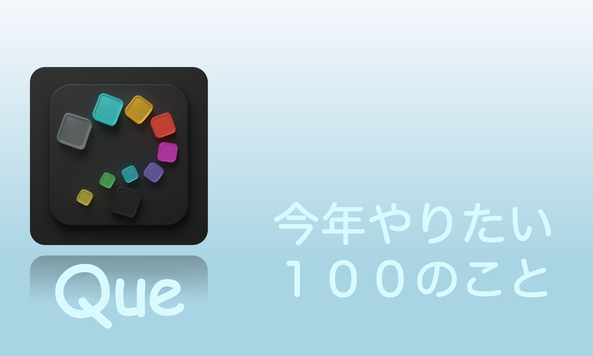
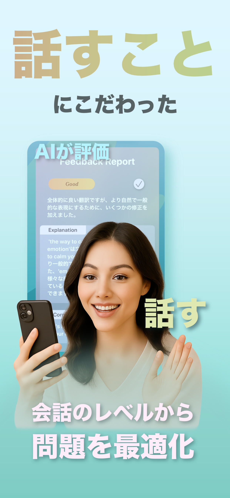
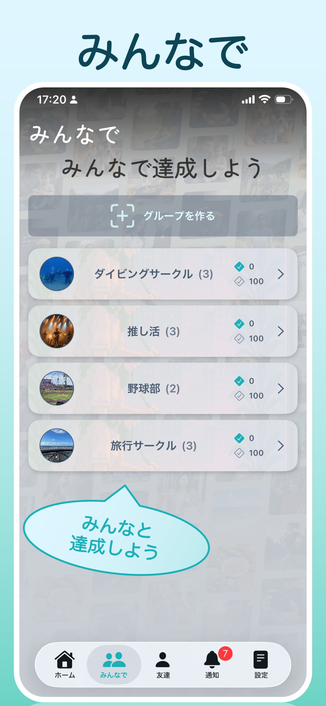
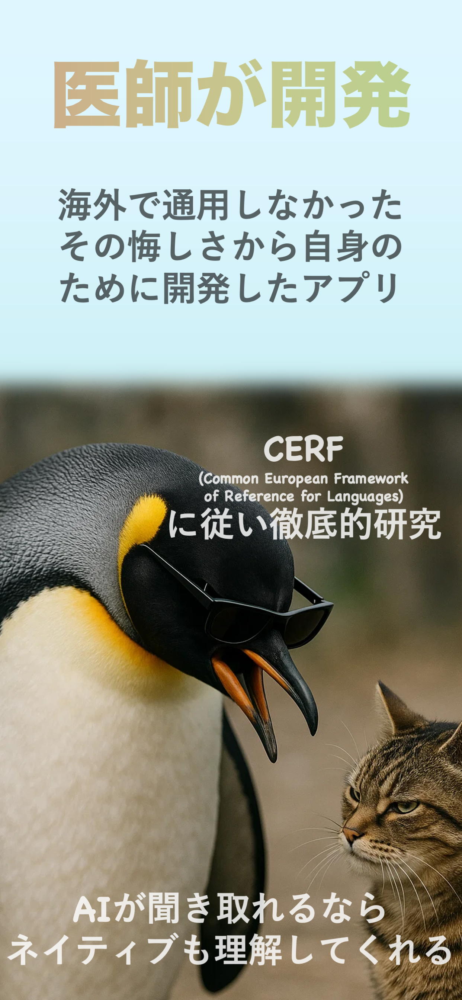

今年の100リスト
旅行、学び、趣味、小さな挑戦まで、今年やりたいことを100件までひとつの場所にまとめられます。

100 THINGS TO DO THIS YEAR
今年やりたい100のこと。
いつかやりたいを、今年やるへ。願い、挑戦、行きたい場所を100のリストにして、進み具合を見える化。ひとりでも、みんなでも使えます。

WHAT IS QUE?
Queは、1年のうちにやりたい100のことを記録し、進捗や達成を見える化するiPhoneアプリです。
自分だけのウィッシュリストとして使うことも、友人とつながって目標や進み具合を共有することもできます。カップルやグループで、一緒に挑戦して達成を喜びたいときにも使えます。
FEATURES
旅行、学び、趣味、小さな挑戦まで、今年やりたいことを100件までひとつの場所にまとめられます。
これから、進行中、達成したことを整理。1年を通じて、自分がどこまで進んだか振り返れます。
友人とつながり、それぞれの目標や進捗を共有。挑戦を知り、応援し合えます。
カップル、家族、サークルなどでグループを作り、共通のやりたいことを一緒に達成できます。
YOUR STYLE
ひとりで
人には見せない目標も、ふと思いついた願いも、自分のペースで記録して振り返れます。
みんなで
グループで共通の100リストに挑戦。誰かの進捗が、次の一歩のきっかけになります。
カップルで
行きたい場所や体験したいことを共有し、達成した記録をふたりの思い出として残せます。
APP PREVIEW



FAQ
今年やりたい100のことを書き出し、進捗や達成を見える化できるiPhoneアプリです。
はい。自分だけのリストとして、やりたいことを記録し、進捗を振り返れます。
はい。友人とつながって目標や進捗を共有でき、カップルやグループで一緒に達成を目指せます。
1年ごとに、やりたいことを100件までリストにできます。
はい。無料でダウンロードして始められます。アプリ内課金があります。
iPhone向け。無料でダウンロードでき、アプリ内課金があります。